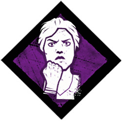
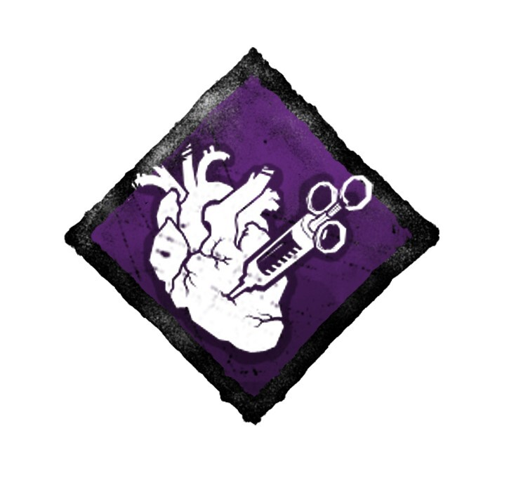
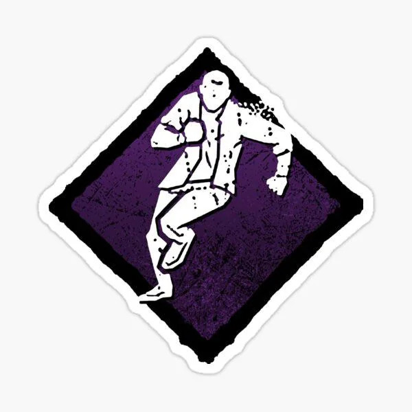
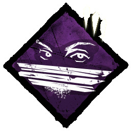

The Meta Build
In this build, you will maximize your chances of looping effectively and staying alive longer. The following perks are critical to mastering the loop:
| Perk | Icon | Description |
|---|---|---|
| Resilience |  | Increases the speed of all actions when injured by 9%. |
| Adrenaline |  | Gain a speed boost at the endgame when you are injured and also heal yourself instantly when the 5 gen pops. |
| Dead Hard |  | Use a dash to avoid a hit, giving you extra time to escape. |
| Windows of Opportunity |  | Reveals the location of nearby windows and vaults to help while looping. |
The ResI Value Build
In this build, you focus on being injured and seeing the killer aura even if he sees yours. The following perks are key:
| Perk | Icon | Description |
|---|---|---|
| Object Of Obsession | If you are the killer's obsession, your aura is shown to him for 3 seconds. You also get a 5% healing and repairing boost each time this happens. | |
| Resilience | Increases the speed of all actions when injured by 9%. | |
| Deadhard | Use a dash to avoid a hit, giving you extra time to escape. | |
| Hope | Gain a 7% speed boost for the last portion of the game when the 5 generators are completed. |